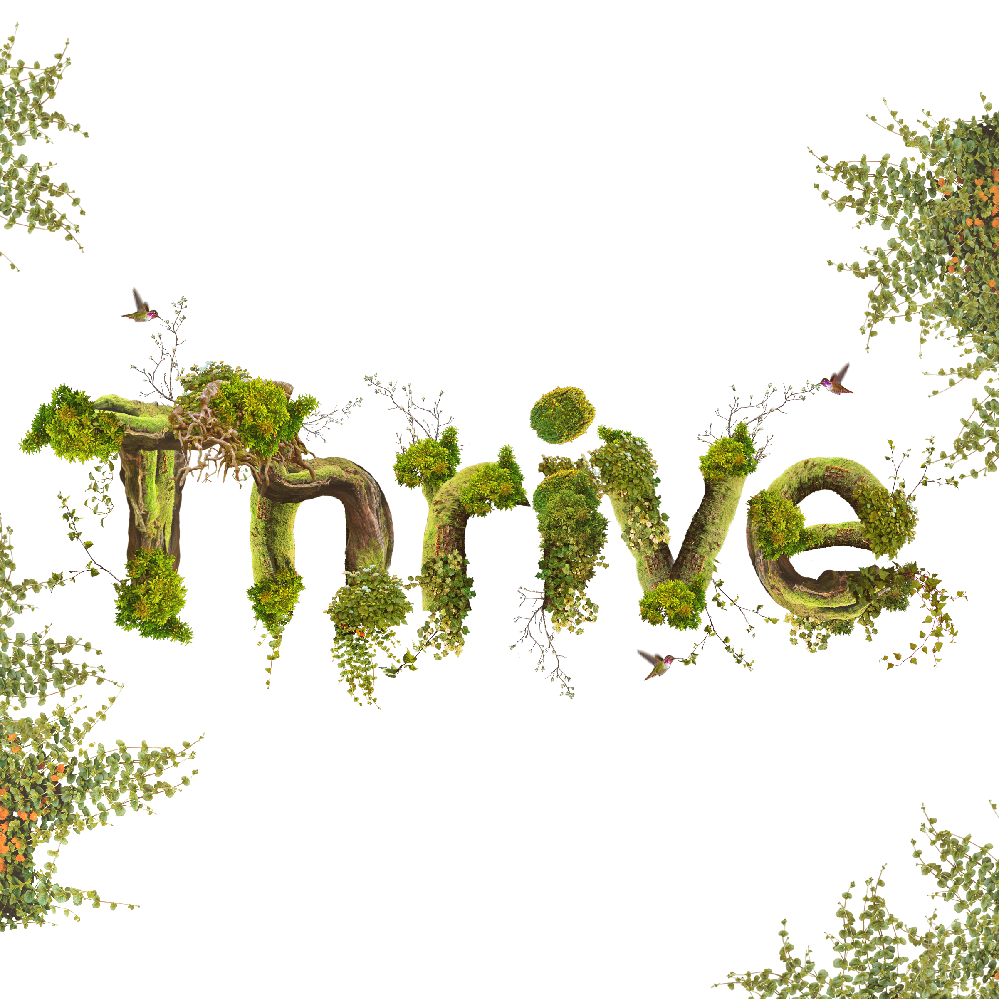

Nature Cards
These Nature Cards were part of a TAFE assessment, the class was to choose one of four businesses to make a series of cards for, my choice was The Body Shop. I took a look at some of the promotional imagery on their website and decided to try and carry out that aesthetic.
These Nature Cards are a series of stock images, some of them have been puppet warped into shape, colour graded and manipulated to build the overall design.
The cards were going to be put on display at another campus for an exhibition but due to it being a themed exhibition the cards were rejected; however, they're on display at Campbelltown TAFE on the second floor of the design department in a glass case.